الوزارة لها دور كبير في بناء مجتمع نشط
استطعنا تطوير البنية التحتية للمنشأت الرياضية خلال الفترة الماضية
تلعب وزارة الشباب و الرياضة دورا حيويا في تنمية قدرات الشباب و تعزيز مشارتهم في المجتمع ففي حوار مع الدكتور اشرف صبحي…
-
عصام عمر يكشف تفاصيل نجاحه : بعدي عن اهلي اصعب ما واجهتة في مشواري الفني
احد الوجوه الشابة الصاعدة, لاقي القبول من الجماهير منذ ظهوره الاول, بدأ مسيرته من الصفر, تحدى الصعوبات و امن بقدراتةو فحصد النجاح تلو النجاح…
-
السفيرة سها الجندى وزيرة الدولة للهجرة و شئون المصريين بالخارج في حوار خاص
مبادرة (سيارات المصريين بالخارج ) تجنى ثمارها
في ظل ادارة وقيادة حكيمة من فخامة الرئيس عبد الفتاح السيسي رئيس الجمهورية صدر قرار بعودة وزارة الهجرة وشئون المصريين بالخارج في 19 ستمبر 2015…
-

الذهب.. طريق المصريين للاستثمار بلا مخاطر
د.صفوت جبر : مصر لها تاريخ عريق في التنقيب عن الذهب
الذهب ذالك المعدن الاصفر الي بمجرد ذكر اسمه تتغير حال سامعيه قدسه المصريون القدماءزواعتبروة زاد الراحلين الي العالم الاخر و كان في اساطير الرومان هو تأشيرة العبور في البرزخ لمن يحمله…
-
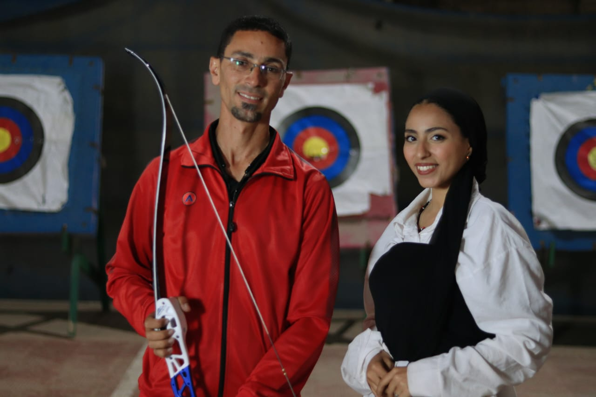 "النور مكانه في القلوب".. مكفوفو مصر يتألقون في رياضة القوس والسهم ويخرج من بينهم أبطال للعالم.
رغم أن رياضة القوس والسهم تعتبر حديثة العهد في مصر، إلا أنها تحظى بجذور عميقة في التراث المصري القديم، حيث برع فيها الأجداد الفراعنة، وأثبت المصريون…
-
الوحدة الوطنية أغلى شىء لدى المصريين
النيل من وحدة بناء الوطن المصري، شكل تعايش المصريين في أرض مصر الرائعة وتجمعهم حول النيل صورة جميلة للوحدة الوطنية أمام العالم، الأسرة هي الضامن للضمان الاجتماعي…
-
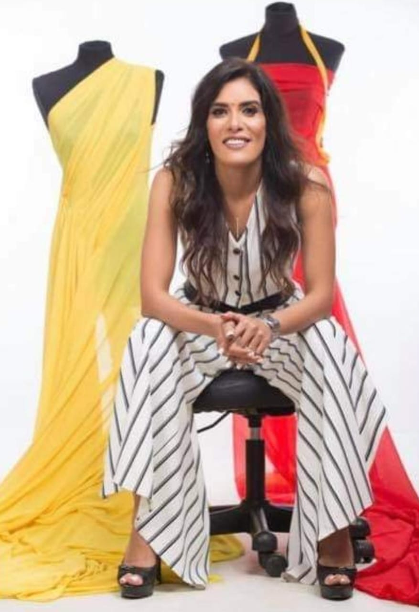 علا عزام: أنا اول من صمم شنطة كلاتش في مصر
ستطاعت مصممة الأزياء علا عزام أن تصبح معروفة بتصاميمها المتميزة التي تجمع بين الأصالة والحداثة، وتُعتبر من الأسماء البارزة في صناعة الأزياء في الشرق الأوسط…
-

القاهرة... حكايات أثرية من دروبها العامرة
القاهرة عاصمة الدنيا. ودار الملك، ومناط قلوب المؤمنين، وجامعة شمل المسلمين، تحمل قلبا ينبض حياة وحكاية.. حكاية تاريخ مهد لوجهها الحاضر. فهي مدينة اختلط القديم فيها بالحديث، تتزاحم بها الآثار أينما حللت في تناغم مثير إلا أنه عند الغوص في شوارعها تقابلك مبانيها العريقة وأحيائها التي…
-
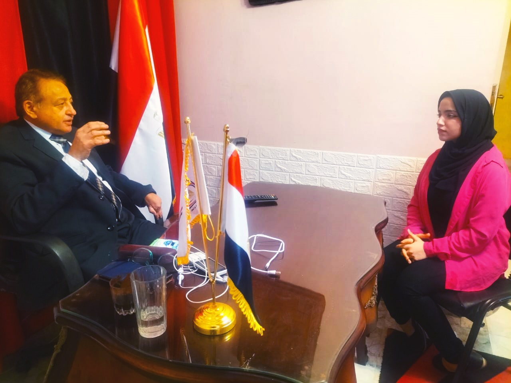 ترك: اثيوبيا متقدرش تمنع مجري المياه برضاها أو غصب عنها هتعديها لأنها قائمه علي بحيرة وإذا عملت كدة هتغرق
مرحبا بكم في حوارنا الصحفي مع السيد حسن ترك رئيس حزب الاتحاد الديمقراطي لمناقشة قضايا سياسية مهمة في الوقت الحالي و سنركز في هذا الحوار على العديد من المواضيع السياسية ورؤيته السياس…
-
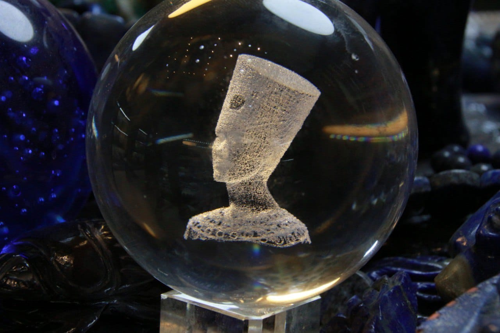 على لسان أهل الخبرة..جولة متعمقة داخل عالم الأحجار الكريمة
يهتم قطاع كبير من القراء منذ قديم الزمان بفقرة الابراج الفلكية وحظك اليوم في الجريدة اليومية، ومنهم من يهوى قراءة الفنجان والكف، وانتشرت في السنوات الأخيرة فكرة ارتباط الأحجا…
-
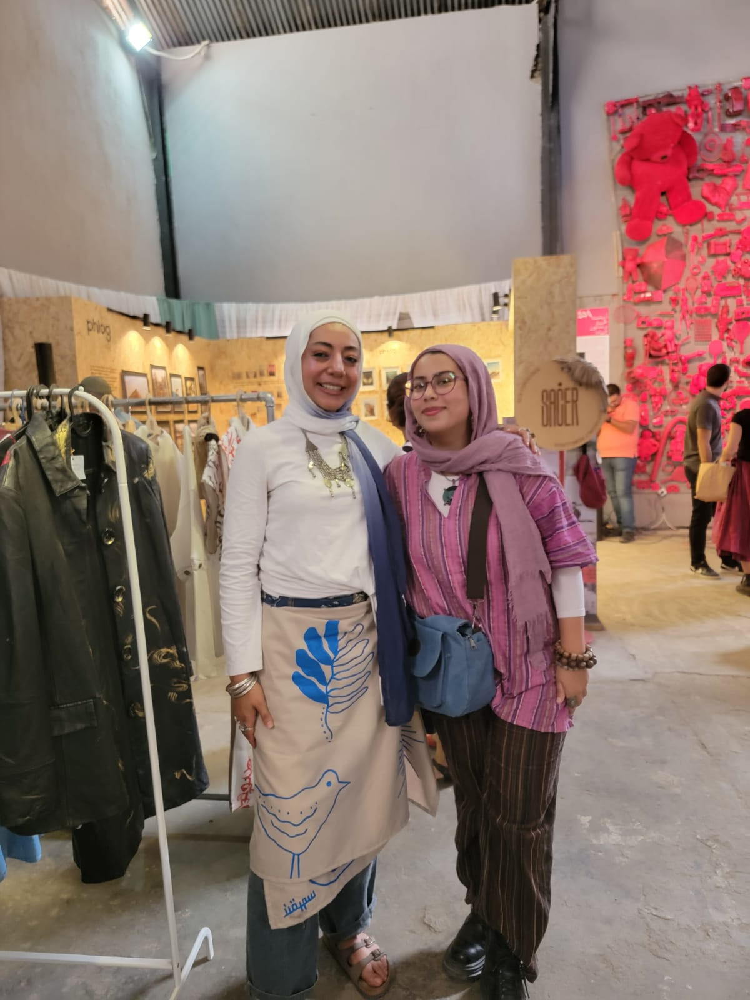 "نوران البنان" تعيد إحياء الملابس القديمة وتحولها لقطع فنية
أحبت "نوران" منذ طفولتها أن تعيد تدوير ملابسها عن طريق قصها وجمع تلك القصاقيص كمحاولة منها للوصول إلى عمل إبداعي، لم تعلم حينها معنى إعادة التدوير ولكنها تبعت شغفها، ولم تتوقف منذ ذاك الحين، حتى افتتحت ماركتها الخاصة باسم نوت.…
-
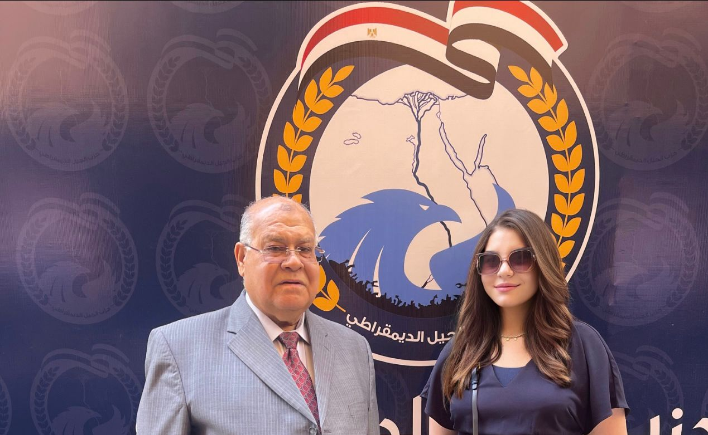 خبراء يدينون العدوان الإسرائيلي علي رفح.. تصعيد ضد مصر
أكد عدد من الخبراء السياسيين إن محور فيلادلفيا منطقة منزوعة السلاح ولها أهمية استيراتيجية كبيرة، مشيرين إلي أن المحور على الأراضي الفلسطينية بين شبه جزيرة سيناء وقطاع غزة…
-
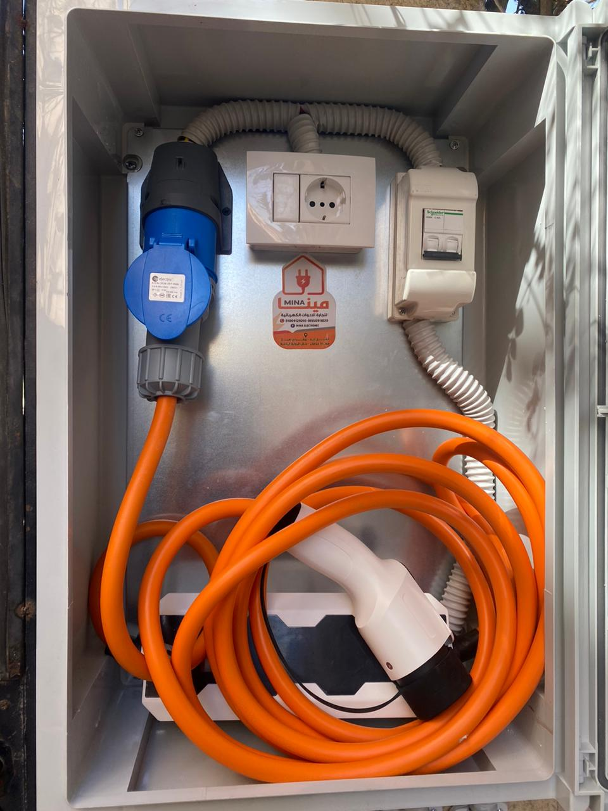 طفره كهربائية في سوق السيارات المصرية
طفره كهربائية في سوق السيارات المصرية
بدأت الدول العربية الانطلاق لنشر ثقافة استخدام السيارات الكهربائية؛ وعلى رأسهم مصر لتتمكن من اللحاق بالتوجه العالمي نحو طاقة نظيفة ضمن مساعي مكافحة الاحتباس الحراري الذي تسببه انبعاثات الوقود، وربما ساهمت أزمة عدم توافر الوقود وغلاء أسعاره في هذا التوجه خصوصا في السوق المصري.…
-
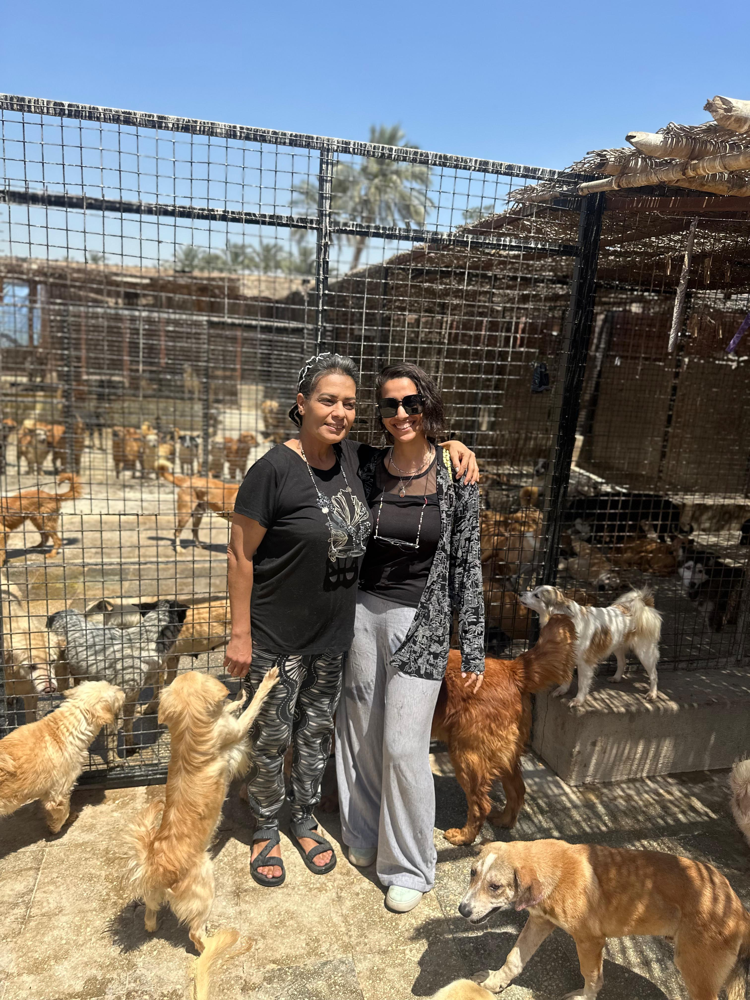 "نانسي نجيب" تخلت عن منزلها وحياتها الاجتماعيه والمهنيه، مقابل أن تبني دار امان للحيوانات المُشردة
تعبر نانسي عن حبها الشديد للحيوانات، و عدم قدرتها على رؤية الحيوانات وهي مُصابه أو بحاجة الى الإنقاذ و تركها وحدها بالشارع، لذلك قررت نانسي التخلي عن مجال العمل بالهندسة، و تحول منزلها إلى ملجأ للحيوانات الاليفة المُصابه سواء كلاب او قطط…
-
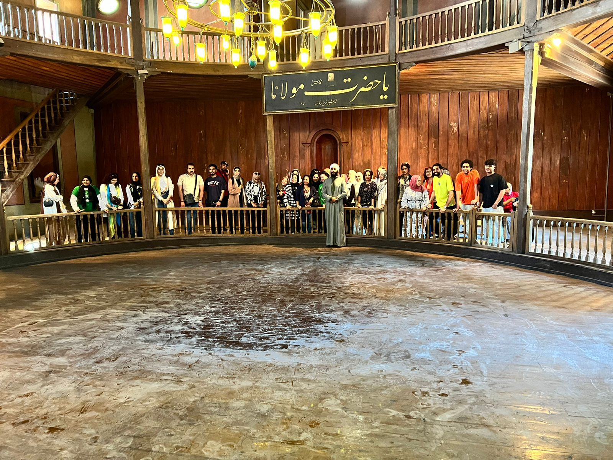 شب عروس
مالا نعرفه عن المولوية
احتفالية تشهدها مدينة قونيا التركية كل عام، يقوم بأدائها عشرات الدراويش الي جانب العديد من الموسيقيين ولا يقتصر فيها الحضور على السكان المحليين فقط، بل يحضرها عدد كبير من السياح لإحياء ذكري وفاة واحد من اهم المتصوفين في التاريخ الإسلامي إنه جلال الدين الرومي الذي أنشأ المولوية فألهم الموسيقيين، وكتب الشعر فأسر قلوب المتذوقين، وحكى عن العشق فذابت افئدة العاشقين.…
-
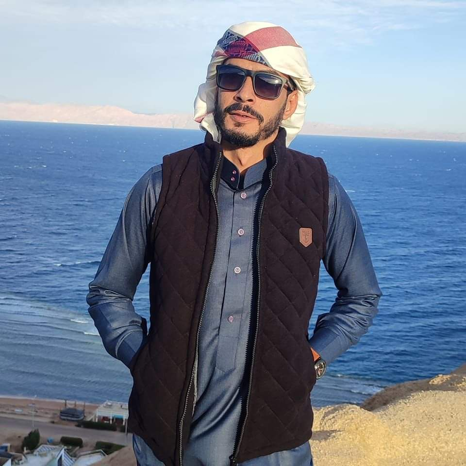 شواطئ رجالها من ذهب
الجدير بالذكر ان مدينة دهب كانت قرية لصيد الأسماك للبدو سابقا، وأصبحت حاليا وجهة سياحية شهيرة وخاصة لهواة ركوب الأمواج ممن يحبون المغامرات والذين سيجدون إلى حد ما أفضل الظروف والأحوال الجوية في العالم على شواطئها. وقد اشتهرت هذه المدينة منذ وقت طويل بأنها مدينة تتسم بالهدوء وبإقامة المعسكرات حيث إنها تجذب دائمًا المسافرين والمرتحلين وأصبحت الآن أكثر تطورًا…
-
حروب الجيل الرابع ... من السيف إلى الشاشة
الدول أصبحت تعتمد على التكنولوجيا في أنظمتها فأصبح من السهل اختراقها تطورت مسميات الحرب بدءًا من الجيل الأول حتى وصولنا للجيل الرابع الذي اتسم بالتكنولجيا والإعلام الرقمي…
-
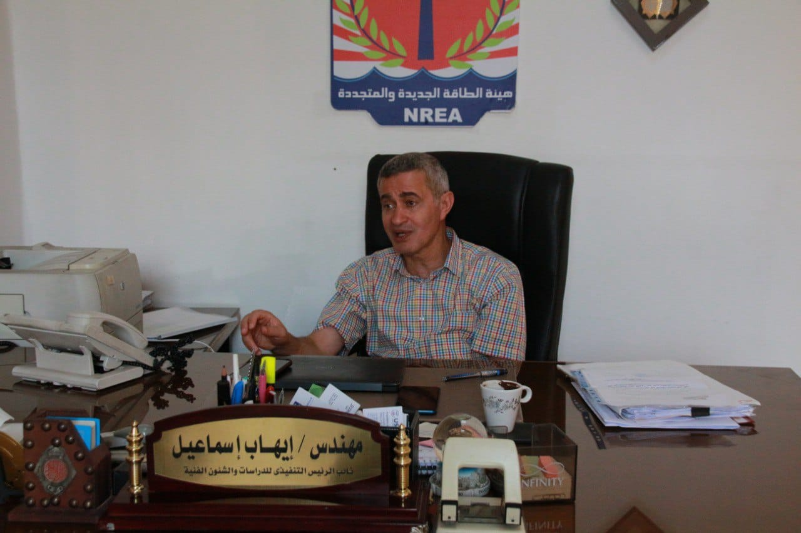 من الوقود الأحفوري إلى الطاقة النظيفة: رحلة نحو مستقبل أخضر
في ظل التحديات البيئية والاقتصادية المتزايدة، أصبح التحول إلى الطاقة المتجددة ضرورة ملحة أكثر من أي وقت مضى، ومن خلال هذا الحوار، نناقش مع الخبير و نائب رئيس هيئة الطاقة الجديدة والمتجددة المهندس "إيهاب إسماعيل "…
-
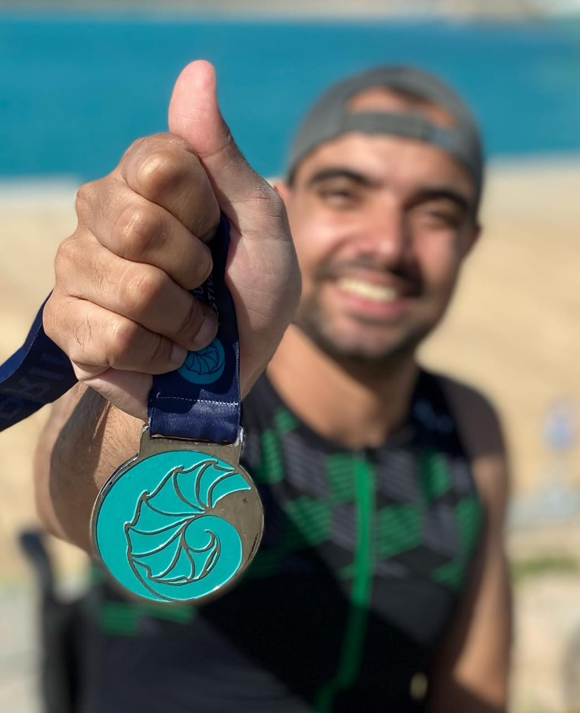 "هيثم عادل" اول شخص على كرسي متحرك يعبر المانش
الهايدرو ثيرابي هو علاج مائي يستخدم لذوي الاعاقات في الماء وهو السبب الرئيسي لما أنا عليه الان وكان سبباً كبير في حبي للسباحة هذا ما قاله هيثم عادل عن (الهيدروثيرابي) مزوداً "مكنتش متوقع اني ابقى قادر أسبح لدرجة…
-
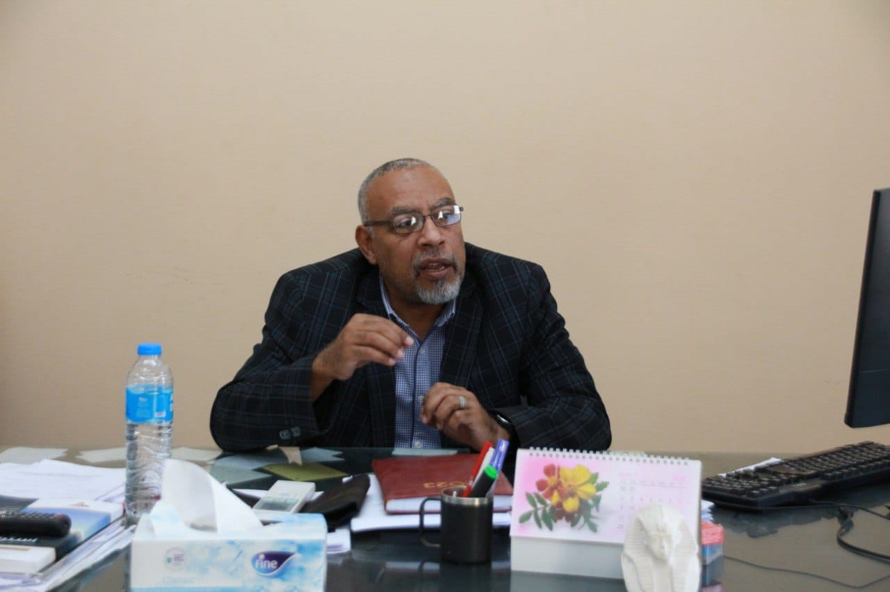 الاستمطار: مستقبل الموارد المائية في عصر الجفاف المناخي
في عالم يعاني من ندرة المياه، تبرز تقنية الاستمطار كحلاً مبتكراً لتلبية احتياجات الإنسان من المياه، ويشكل الاستمطار حلاً مستداماً لمناطق العالم التي تعاني من شح المياه، مما يسهم في تعزيز الأمن المائي وتقليل التوترات الناجمة عن ندرة المياه.…